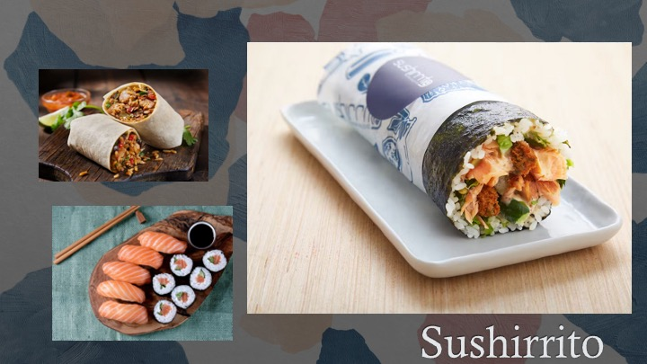

Neoculturation is a fantastic way to transform well-known, favorite dishes into a blend of flavors and popularity. In this case of the Sushirrito (a delicious combination of my two favorite dishes - Sushi and Burrito), its origin actually occurred here in the United States. The original Sushirrito began in San Francisco, California, where a restaurant of the same name, Sushirrito, developed the dish as “modern Japanese with a Latin twist” (Sushirrito, 2022). Since its inception, there have been many modifications to its ingredients that have included items such as tuna, pickled ginger, and wasabi (Silcock, 2017). Even food truck businesses such as Jogasaki Sushi Burrito have been acclaimed by high ranking companies such as Roaming Hunger for their own twist on the popular dish (Jogasaki Sushi Burrito, 2023). The neoculturation has even transferred from the food industry to Do It Yourself (DIY) recipes that everyone can try at home. McCleary is a developer and traveller that has taken her own DIY twist on the Sushirrito for at home individuals to create the dish at an affordable value (McCleary, 2022).
The Sushirrito has two country origins - one involves my own culture from Mexico which contributes to the “Burrito” portion of this dish, and the other involves Japan with the creation of “Sushi” (these items are shown on the left of my image above) (Sushirrito, 2022). Mexico has created several variations on the Burrito that involves different meats, toppings, sauces, or tortillas, but the core essence of the dish remains the same - a tortilla base (large enough to contain the contents) and a mixture of ingredients tightly compressed into a delicious roll. On the otherhand, Japan’s Sushi dish is a lighter version that includes more of a fish variety than red meats. In comparison to the Burrito, Sushi is also compressed into a roll, however, it is normally sliced into pieces for the customer to enjoy and the ingredients are rolled in seaweed (now that is a delicious alternative!).
At this point, the similarities of our two historical dishes share what sound like a great mixture - a roll with ingredients. This led to the adaptation of the delicious Sushirrito created by Peter Yen in 2008 when he noticed that this type of dish was not being served in restaurants despite how tasty the combination was (Gabriele, 2019). Thus, he began mixing the seaweed base from Japanese sushi in place of a flour tortilla and adding rice cooked from Mexican dishes with inclusions of red meat instead of seafood to give birth to a dish now called the Sushirrito (with a restaurant to match) (Gabriele, 2019). The birth of this mixture even questioned physicians with the association of Graft-versus-Host-Disease Prophylaxis where combination of meats and ingredients resulted in different case study samples improving overall health (Hashmi, 2021).
Note: Hashmi’s 2021 case study was published in the academic journal “Acta Haematologica” which contains a reputable history in scientific exploration of human physiology and is utilized in this article for my food’s academic source.
Gabriele, Amanda. “The Origins of the Sushi Burrito: Q&A with the Inventor”. The Manual, April 1, 2019. https://www.themanual.com/food-and-drink/sushi-burrito-sushiritto/?amp.
Hashmi, Shahrukh K. “A Novel Combination for Graft-versus-Host-Disease Prophylaxis: Lessons Learned from the Birth of Sushi Burrito!” Acta Haematologica 144, no. 2 (March 2021): 126–29. doi:10.1159/000508742.
Jogasaki Sushi Burrito. “Jogasaki Sushi Burrito”. Roaming Hunger, 2023. https://roaminghunger.com/jogasaki-sushi-burrito/.
McCleary, Sara. “Sushi Burrito (Sushirrito)”. Belly Rumbles, April 20, 2022. https://bellyrumbles.com/sushi-burrito/.
Silcock, Elena. “Sushi burrito”. Good Food Magazine, Februrary, 2017. https://www.bbcgoodfood.com/recipes/sushi-burrito.
Sushirrito. “Welcome to Sushirrito: Creators of the world’s first sushi burrito brand”. BentoBox, 2023. https://www.sushirrito.com/.